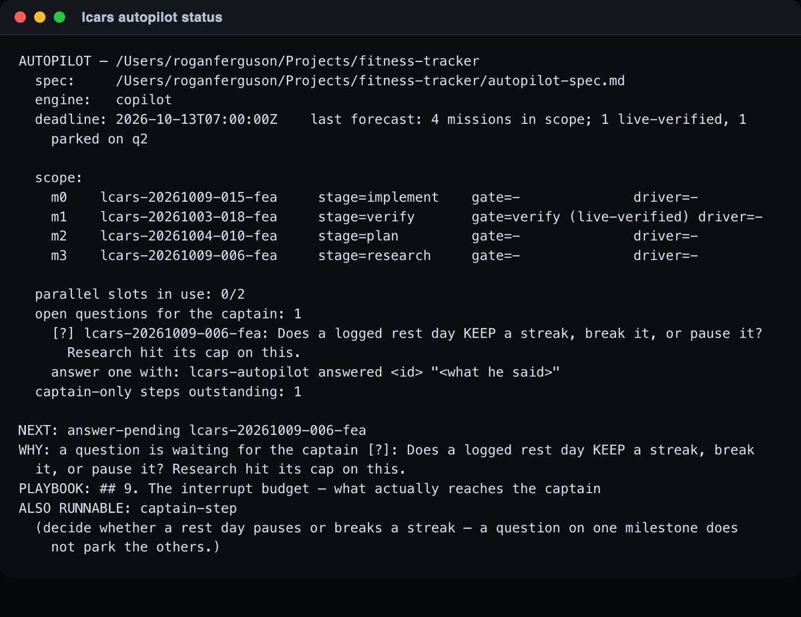

LCARS
Agentic Harness · The story, not the manual
skills/<name>/SKILL.md. Nothing on this page is
repeated there.Every number below is cited to the CHANGELOG.md entry that recorded it, so you can check me. Where something is true but not yet in the changelog, I say so and give you no number to lean on.
I · How this started, and why
I kept having the same bad afternoon. I would have a clear idea, open a coding agent, and get something that looked right in about four minutes — and then spend the rest of the day working out whether it actually was. The generating had become nearly free. The believing had not moved at all.
That was the whole thesis, and written down it is a bit obvious. Not a smarter chat window: a pipeline, with stages, with artifacts on disk between them, and with my attention spent only at the points where my judgement is the thing being bought.
LCARS has a name for that human: the captain — the person whose decisions the pipeline exists to serve, who files the idea and gives the final yes. There is Star Trek paint all over this project, and the captain is the one piece of it that is load-bearing rather than decorative: every gate in the system is defined by what it refuses to decide on the captain's behalf. The word is used that way for the rest of this page.
The first thing that worked was smaller than the idea. A single Mission
went in as a sentence and came back as a branch with tests on it, and I had
not typed any of it. That was enough to tell me the shape was real, and the
first release that carried the whole of it — Align through Verify, each
stage running as a cold isolated worker, on either supported CLI — is
2026.7.1 in the changelog.
The shape the thesis took: a factory
Once there were stages and artifacts, what I had stopped resembling an assistant and started resembling a factory: signals come in, they are triaged into planned changes, the changes get built and tested and reviewed, and merged pull requests come out. That framing turned out to matter more than the pipeline diagram, because it put the real cost in the right place.
So almost everything LCARS has grown since then is some form of evidence production: artifacts a later stage can be audited against, gates that must show their work, screenshots of the running thing, reports that are required to admit what they could not check.
II · The year in turning points
Each of these is a point where a measurement told me something I had not believed, and the intent changed because of it.
July — the first long run alone, and the first lie
A twelve-ticket feature ran unattended for 2h14m and came back shipped,
with four logged bug fixes folded in (2026.7.20). I was
pleased for about an hour.
Then the same release's post-mortem found three defects on that one
mission, and the detail that reorganised my thinking was this: none of
them produced an error, and two of them were actively reassuring
while broken. A premise check that was supposed to confirm a fix
was really on the branch had been inverted and had never once
run, and every test that covered it passed vacuously
(2026.7.20). The same entry records, under known,
unfixed, that the cost estimator undercalled that mission by roughly
six times — $4.86–$25.47 estimated against $150.07 actual
(2026.7.20).
Two intents changed here. First: a green suite is not evidence. Second: ship the known-broken thing with its name written down, rather than quietly. That known, unfixed habit is why the rest of this page can be specific.
August — a prose pin is not a mechanism
Four stages were documented as reading the Mission's own branch. The
way that was enforced was a sentence in a prompt. A live worker was
measured ignoring it (2026.8.1). The cure was structural —
each of those stages now runs in a detached worktree at the Mission's
commit, so there is nothing to ignore.
The same lesson arrived again, harder, a few weeks later. Every cold
worker was described in code and in its own prompt as locked to a role. On
one engine none of it was true: the flag being used only
pre-approves tools, so an inspector documented as having no write
access held it, and a read-only researcher held an editor and a shell
(2026.8.7). It had survived a year because a comment next to
the flag asserted a guarantee the flag did not deliver. The fences are
real now, proven with negative controls, and the false comments were
deleted.
August — the holodeck, and handing over a drawing
Some things are easier to draw than to describe. The holodeck is a room
on the board where you talk a mockup into existence against your real
project, see it rendered live, and then hand the finished drawing to Align
as a Mission (2026.8.3).

The measurement that justified it was not about the pictures. Before
the holodeck, acceptance criteria that referenced a mockup were
essentially nonexistent; with the hand-off carrying the drawing and its
change list into the tickets, they went from 0/44 to 19/40
across that round, with the judged at Verify deferral gone
entirely (2026.8.3). The briefs got concrete because the
drawing made vagueness impossible to hide.
September — the board stops belonging to a laptop
Until 2026.9.4 LCARS quietly assumed one operator at one
keyboard. A Mission lived in the machine that filed it. Making ownership a
property of the person — read from the forge, not from a second
private answer that could disagree with it — is what turned a personal
tool into something a crew can share.

Also in September, LCARS stopped requiring that your project already
exist. It could only ever work on a repo with a test runner, because every
ticket is proven by showing its tests red before the change and green
after, and a project with no runner cannot produce that proof. It was
right to refuse, and useless to anyone starting something new. Day zero
landed in 2026.9.2.
September — Number One, and his first honest zero
Number One is a first officer who works the gates for you: he answers
what he can cite, escalates what he cannot, and at Verify he writes his
checklist before he opens a browser, then walks the build,
photographs it, and scores what he saw against what you asked for
(2026.9.7).

The honest part is the number he reports about himself. On
three identical looks he published a confident verdict over a review that
was only 55–64% checked (2026.9.7). That is
why he is advisory and not a gatekeeper — a measured position, not
caution. It is also why every report he writes now has to state plainly
what it could not check, and only says so when that count is not zero.
He got worse before he got better. A later round found he had been
inventing citations — a filename split into one citation per
letter, a lookup table cited by its own key, an empty entry cited as a
file called "None" — and filing each as a genuine fault against your
build. A malformed screenshot reference used to crash the review, write no
file at all, and have that silence reach you as a clean bill of health
(2026.10.2).
October — handing over the loop
The ECH is the point where you stop running the factory yourself. You
hand it a goal; it settles the scope with you in a single round, and from
there it takes one milestone at a time on its own
(2026.10.1).

Over one night it produced a command line, a page that renders its
state, and a workflow that republishes that page — needing its operator
exactly once, and catching two genuine bugs a fully green suite
had waved through (2026.10.1). What makes that
reasonable is not that it was clever. It is that it used what it
built, filed what it found with a reproduction quoting the real output,
re-proved each fix on deliberately different data, and said plainly when a
check found nothing.
A few weeks later, left running unattended with the authority to merge,
it used that authority to refuse a merge — on evidence,
because the build could silently lose data (2026.10.2). That
is the stand-in doing the job you keep it for, and it is the moment I
stopped thinking of it as an automation.
October — the factory builds the thing it reviewed
On 2026-10-15 and 2026-10-16 both engines were pointed at real private repos with real workers and no human in the loop. The Copilot arm took two missions from nothing to merged in 2h06m, every merge verified at GitHub rather than taken from the worker's own report. Separately, a design made in the holodeck was promoted into a Mission that the factory then built on top of the code it had just merged — the first time LCARS has built the thing it had reviewed.
Then and now
The same board, July and October of the same year.


III · What we learned, and what is still not right
The rules that survived
These are the ones that earned their place by being expensive to learn.
- Never fake the layer you are changing. Changing what the board paints and testing it without a browser; changing a worker's behaviour and testing it with a stub worker — both of those cost me whole days. The cure is always the same: make the harness real at exactly the layer the change lives in.
- A prose pin is not a mechanism. If the only thing
enforcing a rule is a sentence asking a model to follow it, the rule is
a wish. Measured live, a worker ignored one (
2026.8.1). - Measure, don't estimate. Read the clock. Dump the artifact that was actually assembled. Count what the board really drew rather than inferring it from the fixture that fed it.
- Found versus hedged. A report must separate what it genuinely found from what it could not check, and a coverage gain is not a capability gain. A reviewer that hides its blind spots is worse than no reviewer, because it spends your trust without telling you.
- A negative-existence claim is checked, not believed.
"This field does not exist" is the single most expensive sentence a
planning stage can emit unverified (
2026.8.5). - The stand-in is standing in for a human. When its review misses something, the fix is to make the reviewer miss less — not to make the thing it reviews easier to approve.
What does not work well yet
No hedging on this list. Each one is a real, current, reproducible problem.
The estimator reads a spec and prices the run, and it under-reads
actual spend by something between four and ten times. This is not new
— the same failure was recorded at roughly six times as far back as
2026.7.20 — and the diagnosis is now known: it cannot see
cached-token volume, and it cannot see the first officer's own spend at
all. Worse than the inaccuracy: there is nowhere in the product
that shows you what you have spent. Not on the card, not on
the board, not in the terminal. The holodeck records no cost at all.
You find out from your provider.
If you log a bug against a Mission and then decide it does not matter, there is no verb that closes it unfixed. The only route to a clean board is to pay to drive it through the whole pipeline. On an unattended run this is not merely annoying — it is how a loop that files what it finds becomes a loop that cannot converge.
He looks at Verify, scores it, and that is the review; there is no second pass after you fix what he found. His coverage floor also counts screens he could not reach against the build, so a Mission that was never meant to have a user interface is marked down for not having one. Both of those make a useful second pair of eyes read as a harsher judge than it has earned.
Each review round gets a fresh reviewer with no sight of the previous round's objection. So round one can demand a ticket, round two can reject that same ticket, and round three can pass the thing round two rejected — each round a real worker and a real bill. The isolation that makes the audit honest is the same thing that makes it forget.
The whole pipeline runs on it and has driven ideas to merged pull requests, but it has a fraction of the miles the Claude path has, and its billing is counted in a different unit. Expect to meet an edge there first.
It is slow enough that nobody runs the whole of it while working, which means it only catches things at the end, which means some things it would have caught got committed first.
IV · Where it is going
- A board across repositories. Today the viewscreen shows one repo. The shared-board work is already laid — ownership, remote cards, taking a Mission over — and the piece it deliberately did not take on is a registry of several projects in one view.
- Copilot to parity. Not just "it runs", but the same number of miles, the same confidence, and cost shown in its own unit without a mental conversion.
- A spend meter, and an estimator that can see what it is pricing. In that order. Showing the true number is worth more than predicting it better.
- Number One's reach. Re-review after a fix, a
coverage floor that knows what kind of thing it is looking at, and
verdicts as repeatable as his observations already are
(
2026.10.2). - This round itself — making the repo something a stranger can clone, install with whichever CLI they happen to have, and understand in five minutes. That is what you are reading the output of.
Two things I tried and cut
The anti-gutting guard. Letting a worker edit an
already-failing test opens an obvious door: delete the test instead of
fixing it, and the evidence looks identical. I built four successive guards
to close it, and five adversarial review rounds beat every one at a new
token. Round five then caught a guard false-failing an honest
repair. So about a thousand lines of source parsing were deleted for
one source-blind check — the runner may not execute fewer tests than it did
before — and repairs are made visible to you at Verify instead
(2026.7.19). What remains is called a screen, not a proof, in
every place it is described.
The prohibition-carry check. A check that a prohibition
written into the plan must survive into a ticket. It was removed after
three rounds, each of which traded one failure for another: its noise floor
had been measured on missions from a single repo, and the first ordinary
Mission it met produced a false positive by reading a test-coverage bullet
as a prohibition (2026.8.5). The defect it was built to catch
is real and reproduces, so the evidence is kept and the false positive is
kept as a regression test the next attempt has to clear.
The stance
V · How to be part of it
Issues and pull requests are welcome, and so is being told that
something on this page is wrong.
CONTRIBUTING.md
is the short version of how the code is built — command source lives in
skills/<name>/, every command has a test, the failing
test is written first — and
CLAUDE.md
is that same contract written for an AI agent, because most of this repo
was built by one working under it. If you want to understand a decision
rather than a command,
CHANGELOG.md
is the honest record: every release says what was proven, and what shipped
knowingly broken.